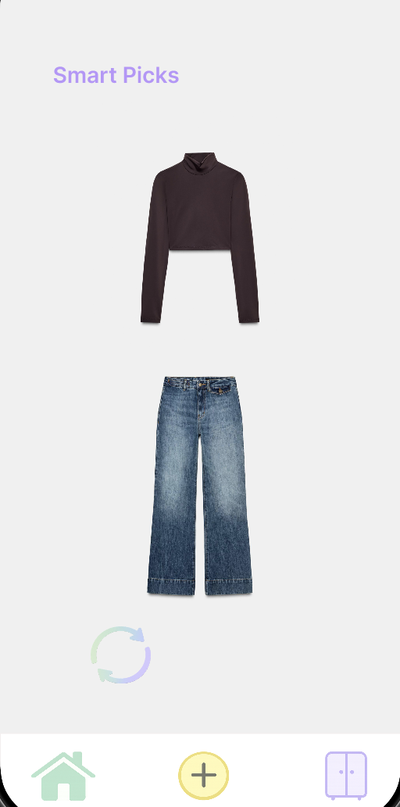

Overview
What it is
Closetly is a mobile app concept for managing your wardrobe digitally. The idea is simple: you log your clothes once, and the app helps you rediscover what you own, build outfits, track what you actually wear, and get smart outfit suggestions based on your wardrobe and the weather.
It came from a personal frustration, owning a lot of clothes and still feeling like you have nothing to wear. Closetly is designed for people who care about fashion but want to be more intentional about how they dress.
3+
Core screens designed
Smart Picks · Wardrobe · Outfit Builder
1st
Full mobile UI project
End-to-end app design including flows and interactions
The Product
App screens

First Screen

Wardrobe

Outfit Builder
Process
Key decisions
01
Soft pastel palette to feel personal, not clinical
Wardrobe apps can feel like inventory systems. The soft pink and lavender palette was a deliberate choice to make the app feel like it belongs in a personal space, more like a fashion journal than a spreadsheet. Colour carries emotion, especially in fashion.
02
Smart Picks — AI outfit suggestion
Smart Picks is an AI feature that looks at your logged wardrobe and suggests a complete outfit for the day. It's not the first screen you land on, but it's the one that makes the app feel genuinely useful rather than just a digital wardrobe catalogue, the difference between an organiser and something that actively helps you get dressed.
03
Keeping the nav minimal — 3 tabs only
Smart Picks, Wardrobe, Outfit Builder. That's it. The temptation in app design is always to add more screens. Keeping it to three core tabs forced every feature to justify its place and kept the experience focused.